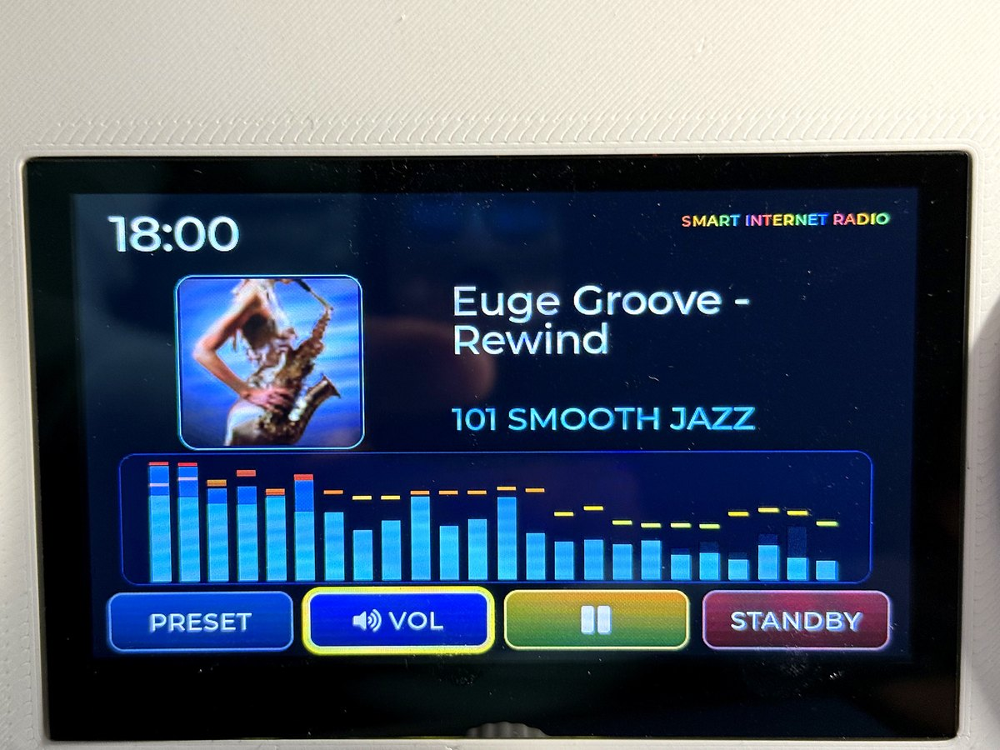
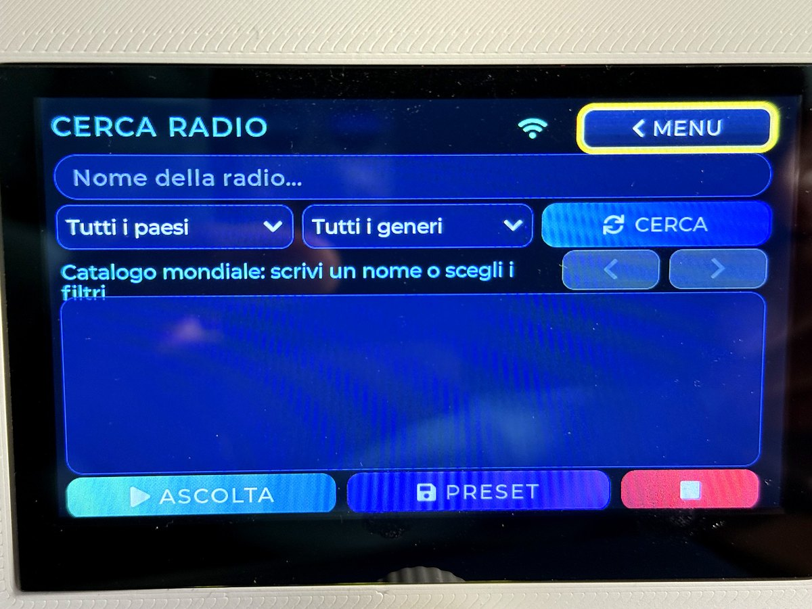
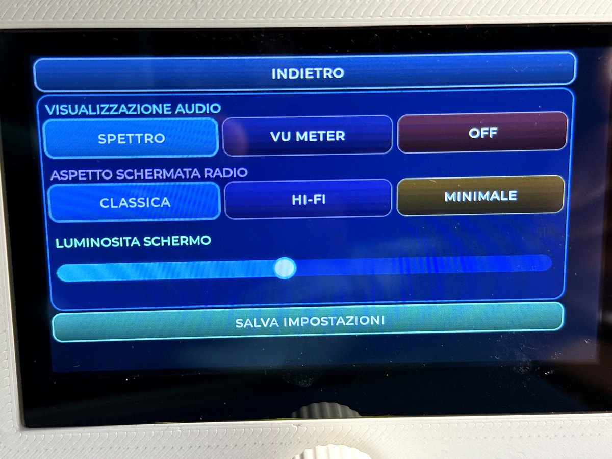

GDN Creations · User manual
Smart Internet Radio
Model with 4.3" 800×480 touch display · firmware 144 and later
The radio's on-screen labels shown in this manual are in English when English is selected as the language; the photos show the Italian interface.
1. Safety instructions
- Only use the supplied power adapter or an equivalent certified 12–24 V DC adapter rated for the required current.
- Use the radio indoors in a dry place. Do not expose it to rain, moisture, drips or splashes, and do not place containers of liquid on it.
- Do not cover the speaker grilles and keep the radio away from heat sources and direct sunlight.
- Do not open the case while the power is connected. There are no user-serviceable parts inside.
- The display is made of glass: do not press it with sharp objects. Clean it with a soft, slightly damp cloth, without solvents.
- Listening at high volume for long periods can damage your hearing.
2. Getting to know the radio

| Part | Function |
|---|---|
| 4.3" touch display | Shows station, track, cover art, spectrum, menus and clock. Tap the buttons directly. |
| Knob (encoder) | Turn it to move the highlighted selection; press it to confirm or to start editing a value. |
| Speakers | Two full-range stereo speakers, left and right. |
| Power socket | Input for the external 12–24 V DC power adapter, on the back. |
The radio has no dedicated power switch: it turns on when the adapter is connected. To pause listening, use standby, which stops the audio and shows the clock (chapter 15).
3. Installation
- Place the radio on a stable surface, ideally a few centimetres from the wall for a fuller sound.
- Make sure the 2.4 GHz Wi-Fi signal is good where the radio stands. The radio does not use 5 GHz networks.
- Connect the adapter to the radio and then to the mains socket. After a few seconds the SMART INTERNET RADIO start screen appears.
4. First start-up
On first start-up, or whenever no network has been saved, a three-step wizard prepares the radio.
Step 1 — Language
Tap the language you want: Italiano, English, Deutsch, Français, Español or Українська.
Step 2 — Wi-Fi network
- Press SEARCH: the radio lists the available networks. Networks already saved are marked with an asterisk (*).
- Select your network and press NEXT.
Step 3 — Password
- Type the password on the on-screen keyboard. Characters are shown in clear text to avoid mistakes.
- Use SHF for capitals, SPACE for a space and the red key to delete the last character.
- Press OK. When NETWORK CONNECTED appears, press CONTINUE.
The network and password are saved. From then on the radio connects by itself and resumes the last station you listened to.
5. Touch and knob
Every function can be used in two ways, and you can switch between them at any time:
- Touch: tap the button or item you want. Drag sliders with your finger.
- Knob: turn it to move the selection, shown by a glowing outline. Press it to activate the selected button. On a slider or list, press to start editing, turn to change the value and press again to confirm.
6. Now-playing screen

While playing, the display shows the time, the station name, the current track (if the station broadcasts it), the album cover or station logo and the selected audio display. Four buttons are at the bottom:
| Button | Function |
|---|---|
| PRESET | Opens the saved stations page. |
| VOL | Opens the circular volume control: adjust it with your finger or the knob. Tap outside the panel to close it. |
| ▶ / ❚❚ | Starts or stops playback. After a stop, the radio does not try to reconnect until you press Play again. |
| STANDBY | Stops the audio and shows the clock (chapter 15). |
Cover art
When the station broadcasts artist and title, the radio looks up the album cover. Each new cover is shown full screen for 3 seconds and then stays in its frame. Tap the frame to see it full screen again. If no cover is available, the station logo or a music symbol is shown.
7. Finding stations

Open SETUP → STATION SEARCH. The radio uses a worldwide catalogue with tens of thousands of stations.
- Tap the Station name… field and type all or part of the station name. You can also leave it empty.
- If you like, narrow the search by country and by music genre. With Other genre… you can type any genre or tag.
- Press SEARCH. Use the ‹ › arrows to browse the result pages.
- Select a station and press LISTEN to play it, or PRESET to save it to the first free preset.
The ‹ MENU button returns to the Setup menu.
8. Presets

The radio stores up to 30 stations on three pages of ten.
- Play a preset: tap the button with the station name.
- Save the current station: tap the first free button, marked + PRESET nn.
- Delete a preset: hold the button for about 2 seconds and confirm. The following presets move up one place.
Presets can also be managed from the web page (chapter 12) and are shared with the display in real time.
9. Equalizer

Open SETUP → EQUALIZER. The ten bands range from 31 Hz (deep bass) to 16 kHz (crisp treble). Each band has two sliders, one for the left channel and one for the right.
- Sound presets: FLAT (neutral), BASS, VOICE, ROCK, POP, JAZZ, CLASSICAL, LOUDNESS.
- L | R: links the two channels, so moving one slider moves the other too.
- SETUP MENU saves the curve and returns to the menu.
10. Display & style

- Audio display: SPECTRUM (24-band stereo analyser), VU METER or OFF.
- Radio screen style: CLASSIC (cover, text and spectrum), HI-FI (spectrum in the foreground) or MINIMAL (clock, cover and essential information).
- Screen brightness: slider from 10% to 100%.
Press SAVE SETTINGS to store your choices.
11. Audio & night

- Startup volume: the volume the radio uses each time it starts.
- Sleep timer: OFF, 15, 30, 45, 60 or 90 minutes. When it expires the music stops; the display and Wi-Fi stay on.
- Night brightness: the switch turns on automatic dimming, and the slider sets its level. START and END set the hours, for example from 22:00 to 07:00.
Press SAVE SETTINGS to store your choices.
12. Wi-Fi and browser control

SETUP → WI-FI / WEB shows the connected network, the radio's IP address and the signal strength (RSSI). To change network, press FORGET NETWORK: the radio returns to the network search and keeps the old network saved.
Control from a smartphone, tablet or PC
- Connect the phone or computer to the same Wi-Fi network as the radio.
- Open the browser and type the IP address shown by the radio, for example
http://192.168.1.80.
From the web page you can:
- start and stop playback, adjust the volume and mute;
- see the station, the current track and the cover art;
- search the worldwide catalogue and save stations to presets, or delete a preset;
- listen to the same station directly on the computer, with its own volume. The OPEN IN VLC link is for stations the browser cannot play.
13. Language
SETUP → LANGUAGE: choose Italiano, English, Deutsch, Français, Español or Українська. The radio restarts to apply the new language.
14. Weather
In standby the radio shows temperature and weather conditions, updated every 15 minutes. In SETUP → WEATHER, type the name of your town and confirm with OK. If the field is left empty, the location is estimated automatically from the Internet connection. CLEAR ALL empties the field.
15. Standby and clock
Press STANDBY to stop the music: the display shows a clock with time, date and weather. The time is set automatically over the Internet.
- ON resumes the last station and returns to the now-playing screen.
- SETUP opens the settings menu.
During the night hours you set, brightness is reduced automatically.
16. Firmware update

Firmware updates are automatic. GDN Creations regularly releases new versions of the software, and while connected to the Internet the radio checks for them by itself. No cables, computer or technical help are needed. You can also start a check manually from SETUP → FIRMWARE.
- When a new version is available, the radio announces it on screen with its number and what is new.
- Confirm the installation. A bar shows the download progress.
- The file is verified before it is installed, then the radio restarts with the new version. Settings and presets are kept.
17. Troubleshooting
| Problem | What to do |
|---|---|
| My Wi-Fi network is not listed | Check that the network is 2.4 GHz and that the radio is close enough to the router, then press SEARCH again. |
| The password is not accepted | Check upper case, lower case and symbols: characters are visible on screen while you type. |
| A station does not start or keeps stopping | The station may be temporarily off air or use an unsupported format. Try another station, or search again and pick a different stream of the same station. |
| No cover art | Not all stations broadcast artist and title. In that case the radio shows the station logo. |
| No sound | Check the volume (VOL button) and that playback is not stopped. Make sure the sleep timer has not expired. |
| Sound distorts at high volume | Lower the bass bands of the equalizer or choose the FLAT preset. With a 12 V adapter the maximum power is lower. |
| The web page does not open | The phone or PC must be on the same Wi-Fi network as the radio. Check the IP address in SETUP → WI-FI / WEB. |
| The weather shows the wrong town | Type your town in SETUP → WEATHER. |
| The display does not respond | Disconnect the power for 10 seconds and reconnect it. Settings and presets are kept. |
18. Technical specifications
| Processor | 240 MHz dual core, 16 MB flash memory, additional PSRAM |
| Display | 4.3" IPS colour, 800×480 pixels, capacitive touch |
| Amplifier | Stereo class D, digital input, built-in DAC |
| Music power | Up to 2 × 30 W with a 24 V supply |
| Speakers | 2 full-range speakers, 8 Ω |
| Audio formats | MP3, AAC, FLAC, Opus, Vorbis, over HTTP and HTTPS |
| Processing | 10-band × 2-channel DSP equalizer, 24-band spectrum analyser |
| Memory | 30 presets, last station played |
| Connectivity | Wi-Fi 802.11 b/g/n 2.4 GHz |
| Languages | Italian, English, German, French, Spanish, Ukrainian |
| Power supply | 12–24 V DC external adapter |
| Case | 3D printed, available in several colours |
19. Notes, privacy and disposal
- Bluetooth: the radio does not send audio to Bluetooth headphones or speakers.
- External services: the radio relies on free public Internet services: a worldwide station catalogue, music search services for cover art, a weather service and time servers. If no weather town is set, an approximate location is derived from the Internet address through a geolocation service. The radio collects no personal data and needs no account.
- Web page and updates: the control page can be opened without a password by anyone on the same Wi-Fi network. Use the radio on a secured home network.
- Station availability: stations are run by third parties and may change address or go off air.
- Disposal: at the end of its life, do not throw this product away with household waste; take it to a collection point for electrical and electronic equipment (WEEE).
GDN Creations · info@gdncreations.com · www.gdncreations.com